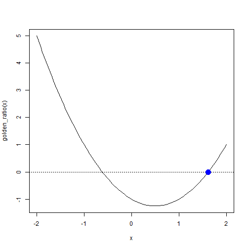

데이터 과학을 위한 R 알고리즘
황금비(Golden Ratio)
1. 황금비 (Golden Ratio) 정의
황금비(Golden ratio)는 어떤 두 수의 비율이 그 합과 두 수중 큰 수의 비율과 같도록 하는 비율로, 근사값이 1.618… 같이 정의되는 무리수이다. 기하학적으로 해석하면 더 큰 \(a\)와 \(a+b\)에 대한 비율이 \(a\)와 \(b\)에 대한 비율과 같다는 것으로 하나의 선분에 대해서도 성립하고, 직사각형 면적에 대해서도 성립한다.
수학적으로 정의와 기하학적 의미는 다음과 같다.

이를 수학적으로 표현하면 다음과 같다. 그리고, 황금비를 \(\varphi\)로 표기한다.
\[ \frac{a + b}{a} = \frac{a}{b} \overset{\underset{\mathrm{def}}{}}{=} \varphi\]
1.1 황금비는 얼마인가?
황금비가 무리수라는 것이 알려져 있다. 이제 황금비가 얼마인지 수식을 풀어보자.
\[\varphi \overset{\underset{\mathrm{def}}{}}{=} \frac{a + b}{a} = \frac{a}{b}\]
양변을 \(ab\)로 곱해주고 정리하면 다음과 같다.
\[\frac{a + b}{a} \times ab = \frac{a}{b} \times ab\]
\[ab + b^2 = a^2\]
이제 앞서 정의한 황금비 \(\frac{a}{b} \overset{\underset{\mathrm{def}}{}}{=} \varphi\)에 맞춰 정리하기 위해서 양변을 \(b^2\)으로 나눠주고 \(\varphi\) 값으로 정리한다.
\[ \frac {ab + b^2}{b^2} = \frac{a^2}{b^2}\]
\[\bigg(\frac {a}{b} \bigg) + 1 = \bigg(\frac{a}{b} \bigg)^2\]
\[\varphi + 1 = \varphi^2\]
이제 2차 방정식으로 정리하고 나서 풀어내면 방정식의 해를 구할 수 있고, 따라서 황금비를 구할 수 있다.
\[\varphi^2 - \varphi - 1 = 0\]
\[\varphi = \frac{1+\sqrt{5}}{2} = 1.6180339887\ldots\]
1.2 컴퓨터를 활용한 황금비 계산
R을 설치하면 stats 팩키지 내부에 unitroot 함수가 있어 방정식의 근을 찾을 수 있다. 황금비 함수를 phi^2 - phi -1 정의하고 나서 unitroot 함수에 근을 찾는 구간을 지정하면 근을 구할 수 있다.
이를 curve 함수로 황금비 함수를 시각화하고, 해가 존재하는 선을 abline 함수로 긋고 나서, unitroot로 찾아진 근을 points 함수로 점모양(pch=16), 두배 크기(cex = 2), 색상은 푸른색(col="blue")으로 지정하여 시각화한다.
# 1. 황금비
## 1.1. 황금비 함수 정의
golden_ratio <- function (phi) {
phi^2 - phi -1
}
## 1.2. 황금비 근찾기
gr_root <- uniroot(golden_ratio, c(0, 2))$root
## 1.3. 황금비 근 시각화
curve(golden_ratio(x), -2, 2)
abline(h = 0, lty = 3)
points(gr_root, 0, pch = 16, cex = 2, col="blue")
2. 근 찾기(Root Finding) 1
근을 찾는 수치해석 알고리즘은 다수 존재한다. 그중 뉴튼-랩슨(Newton–Raphson) 알고리즘을 적용하여 근을 빠르게 구할 수 있다.
\[x_{n+1} = x_n - \frac{f(x_n)}{f^{\prime}(x_n)} \]
즉, 미분이 존재할 경우 초기값을 지정하고, 해당 지점에 미분값을 활용하여 추정값을 구하고 다음 추정값을 동일한 방식으로 계산해 나가면 근사적으로 근과 매우 가까운 값을 구할 수 있다. 이를 시각적으로 구현한 애니메이션으로 표현하면 다음과 같다. 2
근을 구하려는 방정식 함수를 지정하고 나서, 해당 함수의 미분값을 구하여 해당 함수로 작성한다.
## 뉴튼-랩슨 알고리즘
newton_raphson_fn <- function(ftn, init_val = 2, tolerance = 1e-9, max_iter = 100) {
# 초기값 설정
x <- init_val
fx <- ftn(x)
iter <- 0
# 뉴튼랩슨 알고리즘 실행
while ((abs(fx[1]) > tolerance) && (iter < max_iter)) {
x <- x - fx[1]/fx[2]
fx <- ftn(x)
iter <- iter + 1
cat("반복횟수:", iter, "추정된 근의 값:", x, "\n")
}
# 뉴트랩슨 알고리즘 반환
if (abs(fx[1]) > tolerance) {
cat("뉴튼랩슨 알고리즘이 수렴하는데 실패했습니다.\n")
break
} else {
cat("알고리즘이 수렴했습니다.\n")
return(x)
}
}2.1. 황금비 뉴튼-랩슨 알고리즘 근찾기
황금비 함수는 다음과 같이 표현된다.
\[f(\varphi) =\varphi^2 - \varphi - 1\]
황금비 함수를 미분하면 다음과 같다.
\[f^{\prime}(\varphi) =2 \times \varphi - - 1\]
뉴튼-랩슨 알고리즘으로 근을 구하는데 황금비 함수와 일차 미분한 결과를 반영하여 gold_ratio_fn를 작성하여 newton_raphson_fn 함수에 넣어 근을 추정한다.
gold_ratio_fn <- function(x) {
fx <- x^2 - x -1
dfx <- 2*x -1
return(c(fx, dfx))
}
newton_raphson_fn(gold_ratio_fn, init_val=3, max_iter = 1000)반복횟수: 1 추정된 근의 값: 2
반복횟수: 2 추정된 근의 값: 1.666667
반복횟수: 3 추정된 근의 값: 1.619048
반복횟수: 4 추정된 근의 값: 1.618034
반복횟수: 5 추정된 근의 값: 1.618034
알고리즘이 수렴했습니다.
[1] 1.618034
2.2. 애니메이션 뉴튼-랩슨 알고리즘 근찾기
애니메이션에 나온 함수의 근을 찾는 방법도 동일한다.
\[f(x) = x^2 - 4\]
상기 함수를 미분하면 다음과 같다.
\[f^{\prime}(x) = 2x\]
뉴튼-랩슨 알고리즘으로 근을 구하는데 애니메이션 2차 함수(\(x^2 -4\))와 일차 미분(\(2x\))한 결과를 반영하여 animation_fn를 작성하여 newton_raphson_fn 함수에 넣어 근을 추정한다.
animation_fn <- function(x) {
fx <- x^2 - 4
dfx <- 2*x
return(c(fx, dfx))
}
newton_raphson_fn(animation_fn, init_val=10, max_iter = 1000)반복횟수: 1 추정된 근의 값: 5.2
반복횟수: 2 추정된 근의 값: 2.984615
반복횟수: 3 추정된 근의 값: 2.162411
반복횟수: 4 추정된 근의 값: 2.006099
반복횟수: 5 추정된 근의 값: 2.000009
반복횟수: 6 추정된 근의 값: 2
알고리즘이 수렴했습니다.
[1] 2